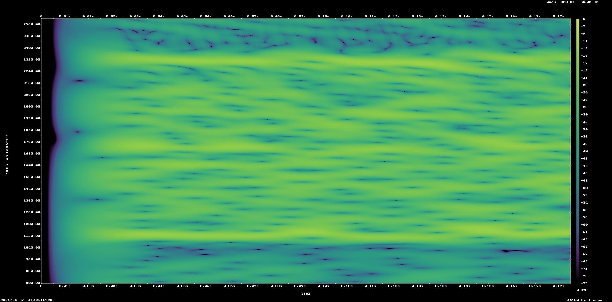

Overlay labels identify the expected Bell 202 tone bands on the unmodified 800–2600 Hz filtered spectrogram.

The broad energy is affected by clipping and noise; the solver classifies each 1200-baud symbol by phase-independent correlation at these exact two frequencies rather than by a simple visual threshold.